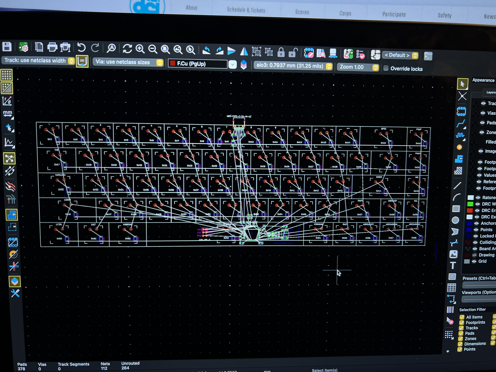

Why I built it
I wanted a PCB project that forced me to work through the entire hardware-design process rather than treating the microcontroller as a black box. The keyboard became a platform for learning how to tackledatasheets, PCB components, power distribution, capacitor decoupling, layer stackup, and preventing noise/EMI.

Electrical design
The board is organized around an ATmega32U4 and a USB-C device connection. The design includes the switch matrix and diodes, CC pull-down resistors, USB data routing, protection components, clock circuitry, local bypass capacitors, and a two-layer PCB stackup.
- USB-C device-side CC configuration and power entry.
- D+ / D− differential routing with attention to symmetry and return paths.
- 16 MHz clock circuitry placed close to the MCU.
- Decoupling capacitors placed at MCU supply pins.
- Switch matrix routing to reduce the required GPIO count.
3D Model
I designed the mechanical enclosure and component layout in OnShape then 3D printed it to ensure proper fitment between the PCB, switches, USB-C connector, and outer case.

What I learned
The biggest takeaway was learning to turn a datasheet into design decisions: identifying mandatory support circuitry, distinguishing recommendations from requirements, calculating pull resistors where needed, placing bypass capacitors, and then checking the implementation against a typical application circuit.
Next project 6-DOF Robotic Arm →